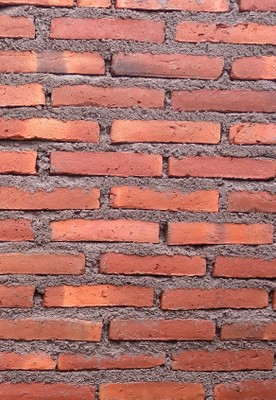

Ladrillo de arcilla cocida, tipo desconocido [CL99]
Es claro que el material estructural es arcilla cocida pero el tipo de ladrillo es desconocido. Los ladrillos pueden estar ocultos , o puede que no sea posible determinar sólida de ladrillo hueco, o información al respecto está disponible.

Muro de ladrillos de arcilla cocida, Chile (S. Brzev)